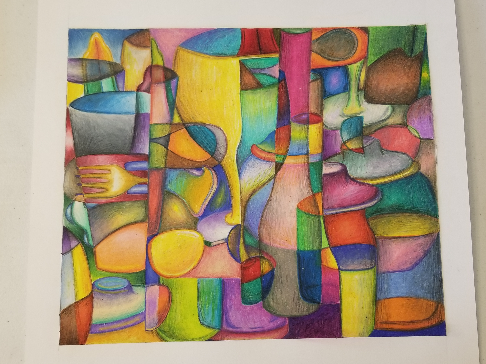
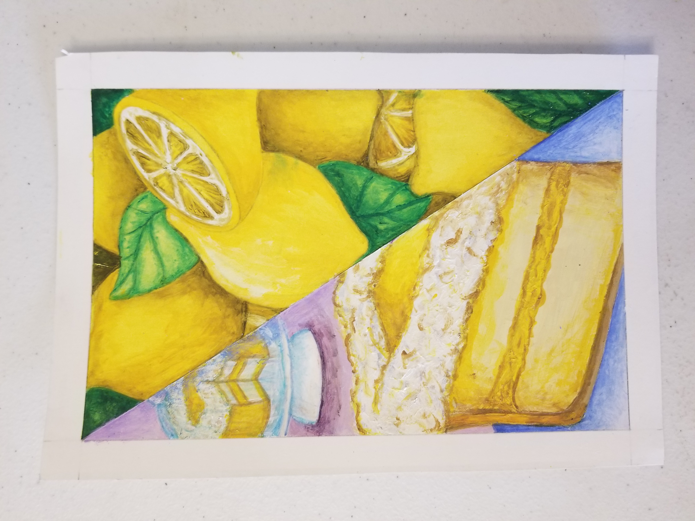
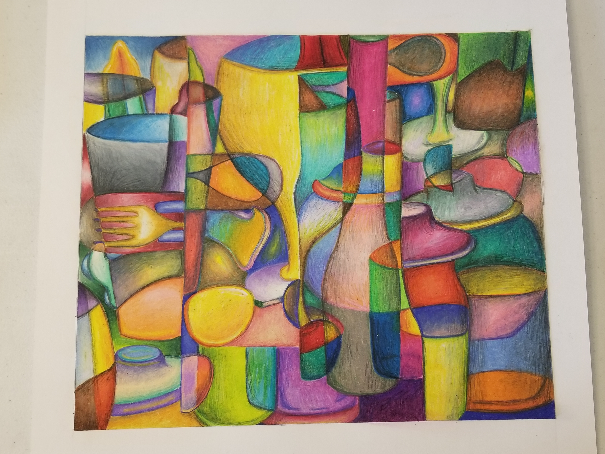
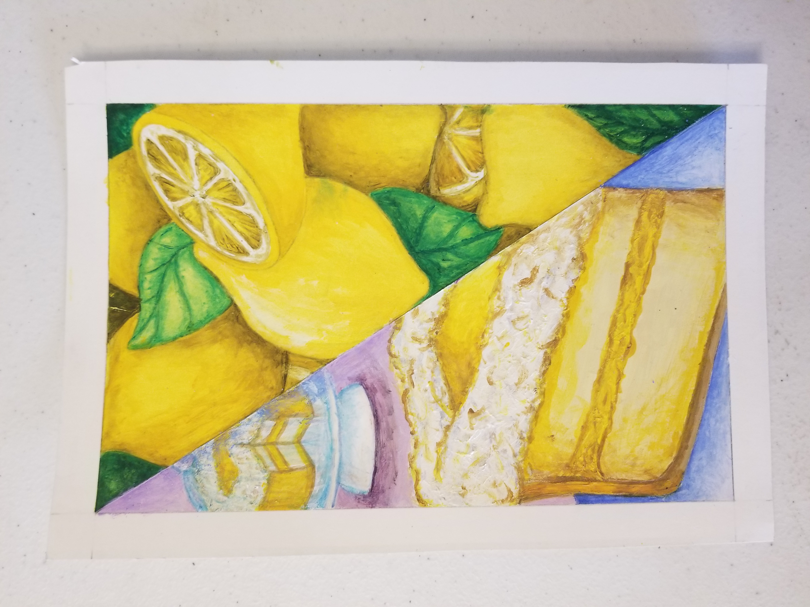
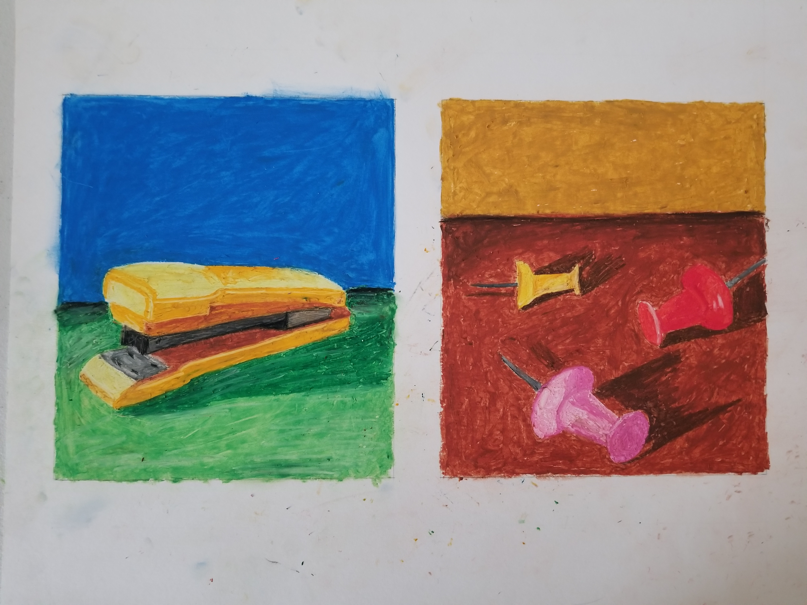
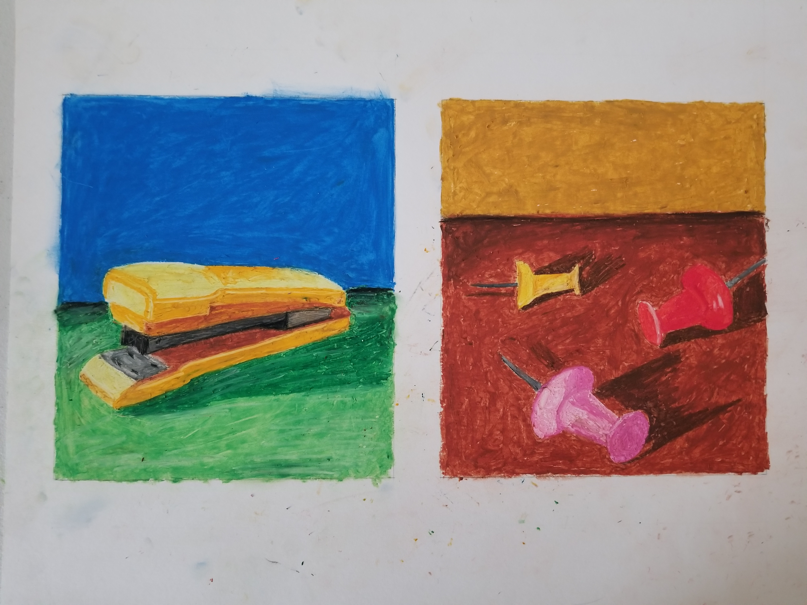

Hello There!
Im Afrah, a UX/UI Designer with a strong passion for problem-solving and creative exploration. As a freelancer, I've collaborated with many small businesses, designing websites, logos, and brand identities that leave a lasting impact.
Beyond design, I'm an avid photographer and artist, constantly seeking diverse ideas to fuel my creativity. I approach UX/UI design with a user-centric mindset, creating seamless and visually appealing interfaces that solve real-world problems.
I'm always eager to learn and thrive on challenges in the ever-evolving design world. Let's connect and bring unique ideas to life!
[ Bellow are some art works I've created. 👇 Feel free to check it out! ]


 



 


 (1).JPG)